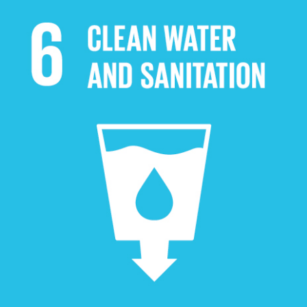
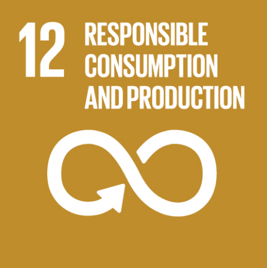
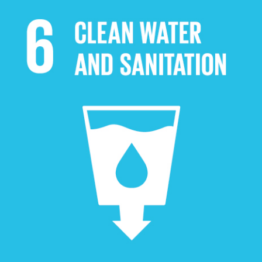
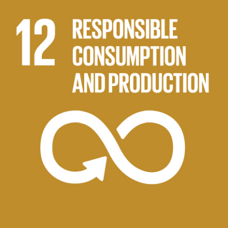
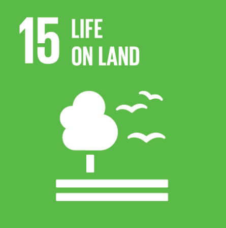
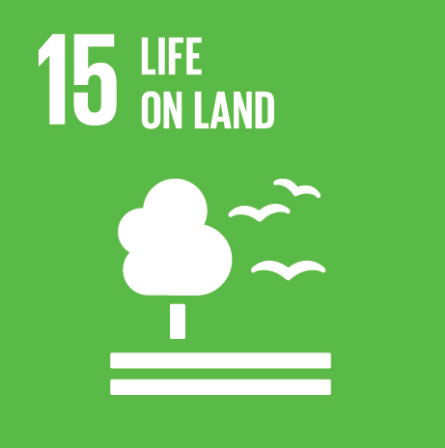

SUSTAINABLE DEVELOPMENT GOALS

 




 

SDG 2.5: By 2020, maintain the genetic diversity of seeds, cultivated plants and farmed and domesticated animals and their related wild species, including through soundly managed and diversified seed and plant banks at the national, regional and international levels; and promote access to and fair and equitable sharing of benefits arising from the utilisation of genetic resources and associated traditional knowledge, as internationally agreed.
SDG 3.b: Support the research and development of vaccines and medicines for the communicable and non-communicable diseases that primarily affect developing countries; provide access to affordable essential medicines and vaccines, in accordance with the Doha Declaration on the TRIPS Agreement and Public Health, which affirms the right of developing countries to use to the full the provisions in the Agreement on Trade-Related Aspects of Intellectual Property Rights regarding flexibilities to protect public health; and, in particular, provide access to medicines for all.
SDG 3.9: By 2030, substantially reduce the number of deaths and illnesses from hazardous chemicals and air, water and soil pollution and contamination.
SDG 6.3: By 2030, improve water quality by reducing pollution, eliminating dumping and minimising release of hazardous chemicals and materials, halving the proportion of untreated wastewater and substantially increasing recycling and safe reuse globally.
SDG 6.6: By 2020, protect and restore water-related ecosystems, including mountains, forests, wetlands, rivers, aquifers and lakes.
SDG 12.4: By 2020, achieve the environmentally-sound management of chemicals and all wastes throughout their life cycle, in accordance with agreed international frameworks, and significantly reduce their release to air, water and soil in order to minimise their adverse impacts on human health and the environment.
SDG 13.1: Strengthen resilience and adaptive capacity to climate-related hazards and natural disasters in all countries.
SDG 14.c: Enhance the conservation and sustainable use of oceans and their resources by implementing international law as reflected in United Nations Convention on the Law of the Sea, which provides the legal framework for the conservation and sustainable use of oceans and their resources, as recalled in paragraph 158 of "The future we want".
SDG 14.2: By 2020, sustainably manage and protect marine and coastal ecosystems to avoid significant adverse impacts, including by strengthening their resilience, and take action for their restoration in order to achieve healthy and productive oceans.
SDG 15.1: By 2030, ensure the conservation, restoration and sustainable use of terrestrial and inland freshwater ecosystems and their services, in particular forests, wetlands, mountains and drylands, in line with obligations under international agreements.
SDG 15.5: Take urgent and significant action to reduce the degradation of natural habitats, halt the loss of biodiversity and, by 2020, protect and prevent the extinction of threatened species.
SDG 15.8: By 2020, introduce measures to prevent the introduction, and significantly reduce the impact of, invasive alien species on land and water ecosystems and control or eradicate the priority species.
Optimizing EMAS And General Services And Global University Ranking
Urdaneta City University (UCU) is committed to enhancing its Environmental Management and Audit System (EMAS) and general campus services to improve institutional sustainability and align with international standards used in global university rankings such as UI GreenMetric, WURI, and Times Higher Education (THE). This initiative focuses on ensuring infrastructure readiness, efficient resource use, safety, accessibility, and integration of the Sustainable Development Goals (SDGs) across operations. By strengthening EMAS, UCU aims to improve environmental performance through systematic auditing, monitoring, and continuous improvement strategies.
Optimizing general services—including facilities management, energy use, waste handling, and support systems for students and faculty—also plays a vital role in creating a functional, inclusive, and environmentally responsible campus. These operational enhancements contribute significantly to the metrics used in global rankings, such as sustainability, institutional support, and internationalization. Through this effort, UCU not only improves its internal systems and accountability but also builds a competitive edge in the global academic arena, positioning itself as a leader in sustainable and high-performing university governance.
The project aims to:
- Enhance awareness of the role of engineering, auxiliary, and general services in achieving internationalization goals and improving global university rankings.
- Provide practical strategies for aligning campus infrastructure and operations with international standards and global benchmarks.
- Promote the integration of Sustainable Development Goals (SDGs), green campus initiatives, and innovative practices in facilities management.
- Strengthen knowledge on safety, accessibility, and sustainability protocols to support a globally competitive university environment.
- Encourage collaboration among service units to foster efficiency, innovation, and excellence in institutional support systems.
Contributions to the Sustainable Development Goals
The “Optimizing Engineering Management, Auxiliary, and General Services” initiative of Urdaneta City University contributes significantly to the advancement of several United Nations Sustainable Development Goals (SDGs) by aligning campus operations with international standards for sustainability, innovation, and institutional excellence. Through strategic seminars, capacity-building, and systems optimization, this initiative strengthens the university’s infrastructure and global competitiveness.
SDG 4: Quality Education By enhancing the readiness and functionality of educational infrastructure, the initiative supports the delivery of inclusive and high-quality learning environments. Ensuring that physical facilities are conducive to teaching and learning helps UCU uphold its commitment to academic excellence and student development. SDG 7: Affordable and Clean Energy Through the promotion of energy-efficient systems and sustainable practices in campus facilities, the project contributes to the university’s efforts to reduce energy consumption and transition toward cleaner, more sustainable energy solutions in its daily operations.
SDG 9: Industry, Innovation, and Infrastructure Central to this initiative is the modernization and optimization of campus infrastructure and general services. By applying innovative solutions in engineering and facilities management, the project advances sustainable, resilient, and inclusive institutional development. SDG 11: Sustainable Cities and Communities The program encourages the development of a safe, accessible, and green campus that reflects broader goals of urban sustainability. It promotes practices that contribute to resilience, disaster risk reduction, and the creation of inclusive spaces for all university stakeholders.
SDG 12: Responsible Consumption and Production By promoting efficient resource use, waste reduction, and sustainable operational practices, the initiative fosters a culture of environmental responsibility across administrative and support services. It encourages conscious decision-making in daily university operations. SDG 13: Climate Action The seminar advances awareness and action on climate-related issues by emphasizing sustainable campus development and the role of facilities in reducing carbon footprints. These efforts contribute directly to institutional climate resilience and environmental stewardship.
SDG 17: Partnerships for the Goals The initiative relies on collaborative efforts among administrative, academic, and support units to implement systemic improvements. These cross-functional partnerships are essential to achieving shared goals and aligning university operations with global benchmarks and best practices.
In summary, this initiative not only strengthens Urdaneta City University’s infrastructure and support services but also drives strategic alignment with global standards in sustainability, efficiency, and excellence. It positions the university as a proactive institution committed to achieving international recognition while advancing the United Nations’ Sustainable Development Goals.
General Assessment
The Optimizing Engineering Management, Auxiliary, and General Services for Internationalization and Global University Rankings event at Urdaneta City University was a well-structured and impactful initiative that effectively advanced its goal of enhancing the university’s global standing. The comprehensive program featured sessions on key areas, including Engineering and Infrastructure Readiness, roles of different university sectors in rankings, and strategies for internationalization. Each session offered participants both foundational knowledge and actionable insights, encouraging them to think critically about how their departments and individual contributions could align with international standards. The training emphasized not only the technical aspects of rankings but also the integration of Sustainable Development Goals, underscoring the university’s commitment to sustainable progress. Notably, the discussions on financial and resource management and SDG integration provided a holistic view of how various sectors can collaborate to achieve long-term institutional success. Participant feedback highlighted a deeper understanding of the complexities of international rankings and a stronger sense of commitment to elevating UCU’s global presence. Overall, the program created a dynamic learning environment that inspired participants to champion the university’s goals of innovation, sustainability, and international excellence.
Recommendations
To further enhance the impact and sustainability of the Optimizing Engineering Management, Auxiliary, and General Services for Internationalization and Global University Rankings program at Urdaneta City University, several recommendations are proposed. First, it would be beneficial to extend the duration of key sessions—especially those on Engineering and Infrastructure Readiness and Sustainable Development Goal integration—to allow participants to explore topics in greater depth and engage in more hands-on activities. Providing pre-event reading materials or guidelines on international rankings and best practices could help participants arrive better prepared and more engaged. Additionally, incorporating more practical case studies, particularly those relevant to the university’s current initiatives, would make the discussions more grounded and actionable. To support the continuity of learning, the program could introduce follow-up workshops or online forums where participants can share progress and exchange ideas on implementing strategies learned during the event. Establishing a mentorship component involving experienced university leaders or external experts in internationalization could further strengthen participants’ skills and confidence. Lastly, future iterations could include evaluation mechanisms such as pre- and post-event surveys or mini-projects that track participants’ application of knowledge and contributions to the university’s global ranking efforts. These recommendations would help solidify the program’s role in driving sustainable internationalization and institutional excellence.